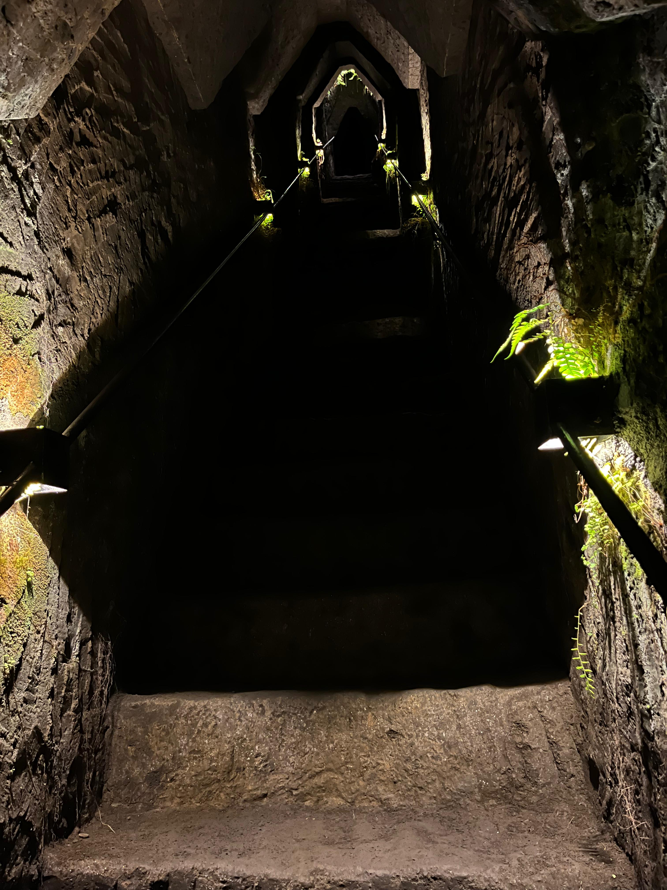
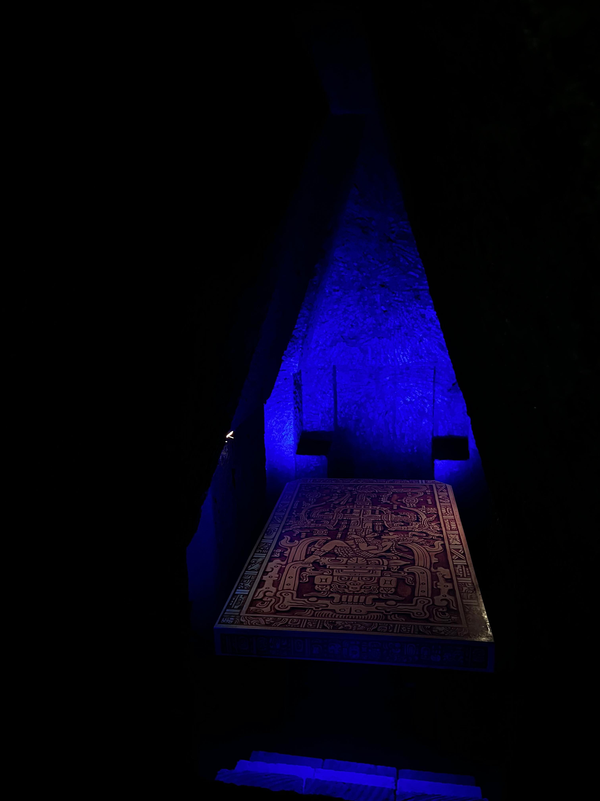

uno de los principales sitios arqueológicos mayas de la península de Yucatán en México. Se encuentra a escasos 2.5 km de
la localidad de Pisté, en el municipio de Tinum, en el estado de Yucatán, al sureste de México. Consistió en una ciudad o
un centro ceremonial que pasó por diversas épocas constructivas e influencias de los distintos pueblos que la ocuparon y que
la impulsaron desde su fundación. Vestigio importante y renombrado de la civilización maya, las construcciones principales
que ahí perduran corresponden al periodo denominado clásico tardío o posclásico temprano.
La gran pirámide de El Castillo es la estructura más grande e importante de Chichén Itzá, la antigua ciudad maya-tolteca ubicada
en la actual península de Yucatán en México.
Según un artículo publicado por la revista Arqueología Mexicana acerca del sitio histórico, la pirámide está erguida por una planta
cuadrangular de 55.5 metros de largo y posee una altura de 30 metros. Sin embargo, existen otras dos capas hacia su interior de las
cuales una oculta un pozo natural.
Un estudio implementado por el Instituto de Geofísica y la Facultad de Ingeniería de la Universidad Nacional Autónoma de México
(UNAM) con la aplicación de tomografías de “Resistividad Térmica Tridimensional no Convencional”; pudo observar cómo está
conformado el interior de El Castillo, incluido lo que se oculta debajo de él.
Esta tomografía trabaja con detectores que, posicionados alrededor y dentro de la pirámide, emiten electrodos (corriente eléctrica)
que permiten medir el interior del edificio, la resistencia del subsuelo y el interior sin causar ningún daño a la totalidad del
edificio. Es por esto que, entre 2015 y 2016, se confirmó que la Pirámide de Kukulcán está compuesto por tres estructuras:
Primera estructura: La pirámide mayor
✦ . ⁺ . ✦ . ⁺ . ✦
Los expertos que realizaron el estudio de tomografías dicen que la existencia de una o más estructuras hacia el
interior de Chichén Itzá puede explicarse de dos formas: por la caída y renovación de diversos grupos de poderes a lo largo de
su historia o bien, por ser la única alternativa para prevenir el deterioro de las edificaciones.
Posee un templo superior cuyos vanos (huecos, entradas) se ubican en los cuatro puntos cardinales, sus largas escalinatas
descienden hacia el suelo y, durante los dos equinoccios del año, la luz solar ilumina el costado del edificio para formar
siete triángulos en la alfarda del camino.
Estos triángulos, junto a la cabeza pétrea de serpiente que se acuesta al final de la escalera, representan al dios Kukulcán:
la serpiente emplumada, que según relata el sitio arqueológico de México, obsequió el calendario a los mayas.
Segunda estructura: El altar
✦ . ⁺ . ✦ . ⁺ . ✦
De acuerdo con la UNAM, las construcciones piramidales fueron interpretadas como un acercamiento de los humanos a sus deidades.
Es por esto que El Castillo fue construido sobre otra estructura idéntica, de menor tamaño, oculta en su interior. Allí,
la subestructura contiene un altar en forma de jaguar, pintado de rojo y decorado con jade en forma de mosaicos turquesas
que simulan las manchas del felino.
Tercera estructura: La nueva pirámide y el cenote
✦ . ⁺ . ✦ . ⁺ . ✦
En uno de los primeros resultados obtenidos por el estudio en 2015, la UNAM confirmó la presencia de un cenote debajo de la
pirámide. Se trata de una depresión geográfica que está inundada y se forma por la disolución de roca caliza a partir de la
filtración de agua dulce.
Posteriormente, en el año 2016 se detectó una segunda estructura que cubría el cenote y podía medir aproximadamente 10 metros
de altura. Ambos descubrimientos forman parte de la capa interna más oculta de la pirámide.

